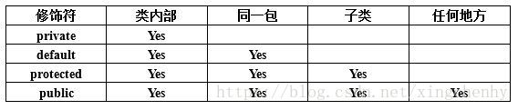
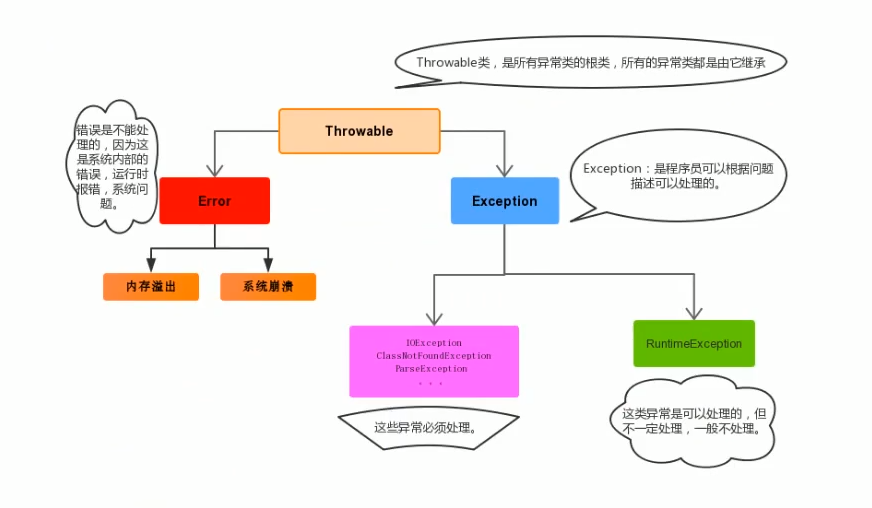

面向对象三大特性
继承
- Java类是单继承的，不允许子类继承多个父类的原因在于，编译器无法确定使用哪个父类方法。
- 在父子类的继承关系中，创建父或子类对象，访问成员方法的规则：优先使用创建的对象的方法，没有则向上找。
继承关系中，父子构造方法访问的特点
- 子类构造方法有一个默认隐含的super()调用，因此一定是先调用的父类构造，后执行子类构造。
- 子类构造可以通过显示使用super()来调用父类重载构造，并且必须是子类构造的第一条语句。
重载与重写
- 重写：子类重写方法与父类方法名相同，参数列表相同。
- 重载：一个类中有多个相同的方法名，但参数列表不同。
多态
- 概念：父类（接口）引用指向子类对象。
- 多态代码中
- 成员重写方法的访问规则：先在子类对象中找，没有则向上找。
- 成员变量访问规则：直接使用父类成员变量。
- 向上转型即多态：父类引用指向子类对象；引用无法调用原本子类特有的方法。
- 向下转型，例如
Animal a = new Cat();Cat cat = (Cat) a;，这个过程将父类变量还原为子类类型，使其又可以访问子类特有的方法。 - 多态的作用？
- Polymorphism allows us to perform a single action in different ways. In other words, polymorphism allows you to define one interface and have multiple implementations.
封装
- 封装通过将类属性定义为私有，对外提供类属性的setters/getters方法来修改和获取属性值实现。
- 封装可以减少耦合，防止类数据被外部类定义的代码随机访问。
权限修饰符作用范围

- 外部类只有public和default两种权限。
- private：只能修饰类方法和类变量，类内部才能访问。
- default：无论对于类、类变量还是类方法，只能同一包内才能访问。
- protected：修饰类变量和类方法，同一包内的类和该类的子类可访问。
关键字
static
修饰成员变量或成员方法：不需要创建对象就可通过类名调用，它们均属于类，而非某个对象
修饰内部类（不允许修饰普通类）
1
2
3
4
5
6
7
8
9
10
11
12
13
14
15
16
17
18
19
20
21
22
23
24
25
26
27
28
29public class StaticTest {
static{
System.out.println("====外部类静态代码块====");
}
public static class Inner{
static{
System.out.println("====静态内部类静态代码块====");
}
Inner() {
System.out.println("====静态内部类构造方法====");
}
public static void innerStaticMethod(){
System.out.println("====静态内部类静态方法====");
}
public void innerMethod(){
System.out.println("====静态内部类普通方法====");
}
}
public static void main(String[] args) {
StaticTest staticTest = new StaticTest();
System.out.println("====分割线====");
Inner inner = new Inner();
StaticTest.Inner.innerStaticMethod();
inner.innerMethod();
}
}1
2
3
4
5
6====外部类静态代码块====
====分割线====
====静态内部类静态代码块====
====静态内部类构造方法====
====静态内部类静态方法====
====静态内部类普通方法====结论：
- 想要在普通类中创建内部类实例，可以用static修饰内部类。
- 外部类加载时不会加载内部类。
- 静态代码块先于构造方法执行。
静态代码块
- 第一次使用类时，类的静态代码块执行唯一的一次。（类加载的初始化阶段执行静态代码块）
- 静态代码块先于构造方法执行。
Tips:
- 静态不能直接访问非静态
- 静态方法中不能用this, this代表当前对象。
final
- 修饰类：当前类不能有子类。
- 修饰方法：该方法不能被子类重写。（显然对于类、方法来说，abstract和final无法同时使用）
- 修饰数据：对于基本数据类型，其值不能再改变；对于引用数据类型，不能再改为存储其他对象的地址或引用（对象自身是可以改变的）。对于类变量，必须赋初始值或在构造方法/静态代码块中赋值。
- 修饰数组：数组的引用不能再指向其他数组，但数组内容可变。
instanceof
- instanceof 的作用是测试它左边的对象是否是它右边的类的实例，返回 boolean类型。
native
- 使用native关键字修饰方法，说明这个方法是本地函数，也就是这个方法是用C/C++语言（或者其他语言）实现的，并且被编译成了DLL，由JVM调用。
- native修饰的方法没有方法体。
transient
- 实现Serilizable接口，将不需要序列化的属性前添加关键字transient，序列化对象的时候，这个属性就不会序列化到指定的目的地中，该属性的将只会存在于内存中。常见的应用有密码、银行卡号等敏感信息。
- transient关键字只能修饰变量。
接口与抽象类
抽象类
public abstract class Name{}；抽象类可以包含成员变量、成员方法、构造方法等，与普通类不同的点只在于：它可能包含抽象方法；它必须要被非抽象子类继承才能实例化，并且非抽象子类必须实现抽象方法（假如父类有抽象方法的话）。单继承。
- 抽象类中不一定包含抽象方法，但是有抽象方法的类必定是抽象类；抽象方法没有方法体。
- 抽象类使用：
- 创建子类继承抽象父类。
- 子类重写父类抽象方法，去掉abstract关键字，实现方法体。
接口
public interface IName{}；接口可以继承多个接口，实现类可以实现多个接口。（多继承，多实现）
接口的成员变量默认都是
public static final的：假如两个接口有相同的成员变量，一个类实现了这两个接口，那么实现类只能通过接口名.变量名来调用以避免歧义，因此必须为static。声明为final的原因是实现类不能够修改接口成员变量的值。Java7：常量，抽象方法
Java8：新增了默认方法(default修饰)，静态方法。
增加默认方法的原因：Java升级后的兼容性问题。如果想在老版本接口中添加某个功能，在添加抽象方法的情况下，所有的老版本实现类都需要修改代码；而通过增加default方法来增加功能就不会有这种问题。
考虑这样的情况，一个类实现了多个接口，且这些接口有相同的默认方法。解决方案：重写方法，并使用
接口名.super.方法名()调用指定接口的方法。1
2
3
4
5public interface Vehicle {
default void print(){
System.out.println("vehicle...");
}
}1
2
3
4
5public interface FourWheeler {
default void print(){
System.out.println("fourWheeler...");
}
}1
2
3
4
5
6
7
8
9
10
11
12
13public class Car implements Vehicle, FourWheeler {
public void print() {
FourWheeler.super.print();
Vehicle.super.print();
}
public static void main(String[] args) {
Vehicle car = new Car();
car.print();
}
}
输出：fourWheeler…
vehicle…Java9：新增了私有方法，私有静态方法
内部类
成员内部类
三种方法使用成员内部类
- 在外部类的方法中创建内部类实例
- main方法中：
Inner inner = new Outer.new Inner(); - main方法中直接new，前提是静态内部类
在内部类中访问重名的外部类变量
1
2
3
4
5
6
7
8
9
10
11
12
13
14
15
16
17
18
19
20public class Outer {
private int num = 10;//外部类私有变量，内部类也可访问
class Inner{
private int num = 20;
public void innerMethod(){
int num = 30;
System.out.println(num);
System.out.println(this.num);
System.out.println(Outer.this.num);
}
}
public static void main(String[] args) {
Inner inner = new Outer().new Inner();
inner.innerMethod();
}
}
局部内部类
该类定义在方法内部，只有在该方法内部才能使用。
局部内部类中的匿名内部类
如果接口的实现类（或者父类的子类）只需要使用一次，那么这种情况下可以省略掉该类的定义，而使用匿名内部类。
最常见的使用：通过将Runnable接口的实现类的实例对象作为参数传给Thread，创建线程。不仅省略了类定义，同时完成了向上转型。
1
2
3
4
5
6new Thread(new Runnable() {
public void run() {
System.out.println("...");
}
}).start();
包装类
包装类通过将基本数据类型封装起来，在类中提供一些方法，便于操作这些基本数据类型。
Java自jdk5后提供自动装箱与自动拆箱机制。
基本类型与字符串的转换
- 基本类型 -> String：基本类型值+””
- String -> 基本类型：使用包装类的静态方法
parseXXX("str")- Integer：
static int parseInt(String s) - Double：
static double parseDouble(String s)
- Integer：
重写equals为什么要重写hashCode?
要搞清楚这个问题，我们首先需要准备以下前置知识：
Object类的equals方法实现如下：
1
2
3public boolean equals(Object obj) {
return (this == obj);
}由此可知，“==”判断的是内存地址是否相等，若子类不重写equals，那么对象调用该方法判断的是是否为同一个对象。而我们重写equals的目的一般是判断两个对象的字段值是否相等。
Object类的hashCode方法如下：
1
public native int hashCode();
若子类不重写hashCode方法，那么子类对象的hash码是调用本地C++方法根据对象的内存地址生成的。
结论：我们重写了一个类的equals和hashCode方法后，
a.equals(b) == true是a.hashCode() == b.hashCode()的充分条件。结论证明：若
a.equals(b)，说明两个对象的字段值都相等。重写的hashCode方法中生成hash码的方式是根据对象的字段值采用相同的算法生成，因此两个对象的hashCode一定相等。HashSet是通过持有一个HashMap实例实现的。我们都知道
HashSet是不允许重复存储元素的，当调用其add方法时会进行自动排重，源代码如下：1
2
3public boolean add(E e) {
return map.put(e, PRESENT)==null;
}PRESENT常量是在
HashSet中定义的：1
private static final Object PRESENT = new Object();
由源码可知，由于
HashMap中key的唯一性（不可能存在两个相同的key），HashSet的自动排重是通过将元素作为HashMap的key实现的。而key的唯一性是由key的hash码的唯一性保证的（参见HashMap源码）。
有了以上前置知识，现在考虑以下场景：假设有一个Student类，若我们重写了其equals而不重写hashCode，那么就会导致两个对象的字段值相等，但是hash码不等的情况出现。现在我们的需求是将一些Student对象放入HashSet，假设有两个Student对象的所有字段值都相等（客观现实是同一个人），需要我们的HashSet去重，问题显而易见，这两个对象的hash码不等，那么这两个对象都会作为key存储在HashSet中，无法完成去重。
值传递与引用传递
- 实参与形参：
- 形式参数：定义函数时使用的参数，用来接收实际参数。
- 实际参数：调用有参函数时，传入的内容。
- 值类型与引用类型
- 值类型（基本数据类型）：直接存储值。
- 引用类型：存储的是对象的地址。对象在堆中。
- 求值策略（Evaluation Strategy）：值传递与引用传递，属于函数调用时参数的求值策略，是对调用函数时求值和传值的方式的描述，而非传递的内容的类型。（内容的类型是指：值类型还是引用类型。）值类型与引用类型，用于区分两种内存分配方式，值类型在虚拟机栈上分配，引用类型在堆上分配。
- 值传递概念：调用函数时，将实际参数拷贝一份传递给函数。In call by value, the argument expression is evaluated, and the resulting value is bound to the corresponding variable in the function (frequently by copying the value into a new memory region). Java uses call by value evaluate function arguments left-to-right
- 引用传递概念：调用函数时，将实际参数的地址传递给函数。Call by reference (or pass by reference) is an evaluation strategy where a function receives an implicit reference to a variable used as argument, rather than a copy of its value.
- 总结-“Java中只有值传递，值传递与引用传递的区别重点在于是否拷贝”：对于基本数据类型，传递的是基本数据类型的值的拷贝；对于引用类型，传递的是对象的地址值的拷贝，形参与实参都保存的是堆内存中同一个对象的地址。
参考：https://en.wikipedia.org/wiki/Evaluation_strategy
Deep Copy, Shallow Copy
Shallow Copy
B对A的浅拷贝：创建新对象B，将A的字段值复制到B。
- 如果该字段值是对对象（例如，存储器地址）的引用，则复制该引用（地址）。因此如果A或B修改了引用的对象，会在另一个中可见。
- 如果该字段值是基本数据类型，则复制值。
Java中如果要对对象A进行浅拷贝，则A必须实现Cloneable接口，并重写继承自Object的clone()方法， then
A B = (A) new A().clone();示例：
1
2
3
4
5
6
7
8
9
10
11
12
13
14
15
16
17
18
19
20
21
22
23
24
25
26
27
28
29
30
31
32
33class C{
int a;
int b;
C(int a, int b){
this.a = a;
this.b = b;
}
}
class A implements Cloneable{
int val;
C object;
A(int val, C obj){
this.val = val;
this.object = obj;
}
public Object clone(){
try{
return super.clone();
}catch(CloneNotSupportedException e){
e.printStackTrace();
return null;
}
}
}
class Test{
public static void main(String[] args){
A aObj = new A(1, new C(2,3));
A bObj = (A) aObj.clone();
}
}如上代码中，如果bObj修改了引用类型C object中b的值为10，那么对象aObj中引用类型C object中b的值也是10，因为浅拷贝只是拷贝了aObj中object的引用（地址）给bObj。
Deep Copy
- B对A的深拷贝：创建新对象B，对于A的引用类型字段，在B中创建该引用类型对象的拷贝，而非像浅拷贝中那样只拷贝引用（地址）。
- 要实现深拷贝，不仅A需要实现Cloneable接口并重写clone方法，A中的引用类型C也需要实现Cloneable接口并重写clone方法。
- 深拷贝也可通过对象序列化的方式实现ByteArrayInputStream、ByteArrayOutputStream、ObjectInputStream、ObjectOutputStream。
示例：
1 | class C implements Cloneable{ |
参考：https://en.wikipedia.org/wiki/Object_copying#Methods_of_copying
Java四种引用类型
JDK1.2之后，引用概念分为以下4种，强度依次减弱
- 强引用：类似“Object obj = new Object()”这类引用，只要强引用存在，GC永远不会回收被引用的对象。
- 软引用：描述有用但非必须的对象，当系统将要发生OOM异常时，软引用指向的对象才被真正回收。通过SoftReference类实现。
- 弱引用：GC工作时，无论当前内存是否足够，都会回收只被弱引用关联的对象。通过WeakReference类实现。
- 虚引用：为一个对象设置虚引用关联的唯一目的时能在对象被回收时收到一个系统通知。通过PhantomReference类实现。
集合的三种遍历方式
- for
- 形式：
for(初始化;结束条件;自增操作等) - 需要知道集合的大小和元素类型，使用索引。
- 形式：
- foreach
- 形式：
for(T element : colletion) - 需要知道集合元素的类型，不需要索引。
- 形式：
iterator
- 形式：
Iterator it = collection.iterator();while(it.hasNext()){ object o =it.next(); ...} - 集合的大小和类型都无需知道，也无需索引。
- 形式：
Tips:
- foreach是iterator的语法糖，底层使用iterator实现。
- 使用for循环进行remove操作时，每一次操作完成后索引需要自减。
- iterator/foreach遍历集合时的add/remove操作见“Java集合框架”。
异常
Java异常图解

Throwable类中定义了一些查看异常的方法：
public String getMessage()：获取异常的描述信息。public String toString()：获取异常的类型和异常描述信息。void printStackTrace()：打印异常的跟踪栈信息。最常用。
捕获异常
1
2
3
4
5
6
7
8
9
10
11
12
13
14try{
//可能产生异常的代码
}catch(异常类型1 e){
//异常的处理逻辑；一般会记录到日志中
}
...
catch(异常类型n e){
}finally{
//无论是否出现异常都会执行，常用于资源释放
}
//jdk1.8之后支持try with resource写法
try(需要释放资源的代码){
}catch(Exception e){}自定义异常类
1
2
3
4
5
6
7
8
9
10
11public class XXXException extends Exception{
//添加一个空参构造
public XXXException(){
super();
}
//添加一个带异常信息的构造
public XXXException(String message){
super(message);//所有的子类异常都交给父类处理
}
}自定义异常类一般以命名Exception结尾，必须继承Exception类或者RuntimeException类：
- 继承自Exception：自定义异常为编译期异常，必须处理。
- 继承自RuntimeException：运行期异常无需处理。
字符串
String
String类是final的，因此不能被继承。源码是一个final修饰的字符数组，因此一旦创建就是一个不可变的字符串。
1
private final char value[];
字符串的拼接：由于String不可变，两个String类型拼接需要新开辟一块内存空间，效率低下。建议使用StringBuffer或StringBuilder，这两者的区别稍后讲解。
String常用方法
- 比较
equals(Object obj)：如果比较双方一个常量一个变量，应把常量写在前面，如"abc".equals(str)。因为如使用str.equals("abc")，假如str为空会导致空指针异常。equalsIgnoreCase(String str)：忽略大小写。endsWith(String suffix)：比较suffix是否为串的后缀。
- 获取
length()：获取长度。concat(String str)：获取拼接后的串。charAt(int index)：获取指定索引字符。public int indexOf(String str)：查找参数串在本串中首次出现的索引位置，如无匹配结果返回-1。可用于字符串匹配。
- 截取
subString(int index)：截取从参数位置开始后的子串。subString(int begin, int end)：截取[begin, end)子串。trim()：去除字符串的前后空格。
- 转换
toCharArray()：串转换为字符数组getBytes()：串转换为底层的字节数组toUpperCase()和toLowerCase()：大小写转换。replaceAll(String regex, String replacement)：使用给定的replacement替换所有符合regex规则的子串。
- 分割：
split(String regex)：按照参数规则分割字符串为若干子串。
StringBuffer与StringBuilder
都由final修饰，不能被继承。
都继承于AbstractStringBuilder，底层使用的字符数组没有final修饰。StringBuffer和StringBuilder的默认构造中，char数组默认大小为16，在调用append方法拼接字符串时，先判断拼接后的长度是否超出当前数组大小，若超出则自动扩容（将当前字符数组复制到新容量的数组中），若不超出则直接将要拼接的字符串复制到数组中。源码如下：
1
2
3
4
5
6
7
8
9
10
11
12
13
14
15
16
17public AbstractStringBuilder append(String str) {
if (str == null)
return appendNull();
int len = str.length();
ensureCapacityInternal(count + len);
str.getChars(0, len, value, count);
count += len;
return this;
}
private void ensureCapacityInternal(int minimumCapacity) {
// overflow-conscious code
if (minimumCapacity - value.length > 0) {
value = Arrays.copyOf(value,
newCapacity(minimumCapacity));
}
}StringBuffer：线程安全，StringBuilder：线程不安全。因为 StringBuffer 的所有public方法都是 synchronized 修饰的，而 StringBuilder 并没有。因此StringBuffer的性能低于StringBuilder。
StringBuffer 适用于多线程场景，如果是单线程场合 StringBuilder 更适合。
jdk1.9后String/StringBuffer/StringBuilder均不再使用字符数组，而是直接使用字节数组byte[] value。
判断字符串是否相等
1 | /** |
Arrays常用方法
static List<T> asList<T... a>：返回参数列表的List，例List<String> stooges = Arrays.asList("Larry", "Moe", "Curly");binarySearch()：有多个重载的方法，二分查找static String toString(数组)：将参数数组变成字符串，默认格式为[元素1, 元素2, 元素3….]sort(数组)：按照默认升序对数组元素排序；自定义类型需要实现Comparator接口。